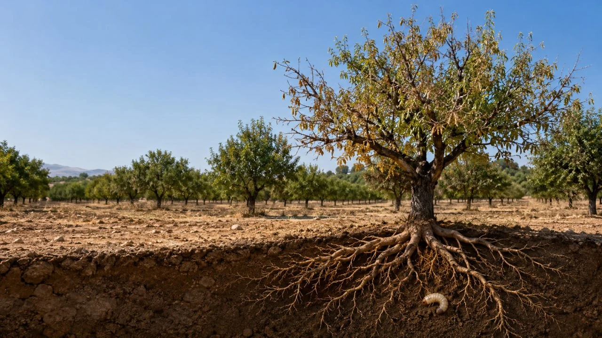
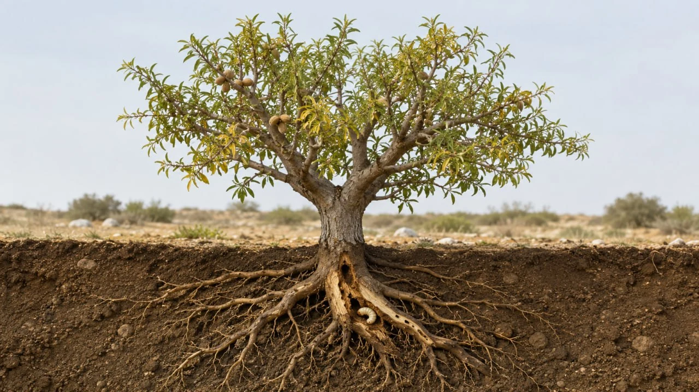
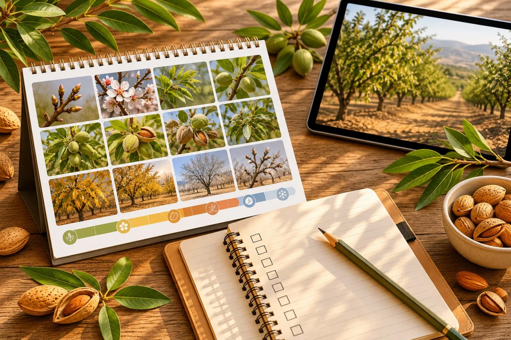
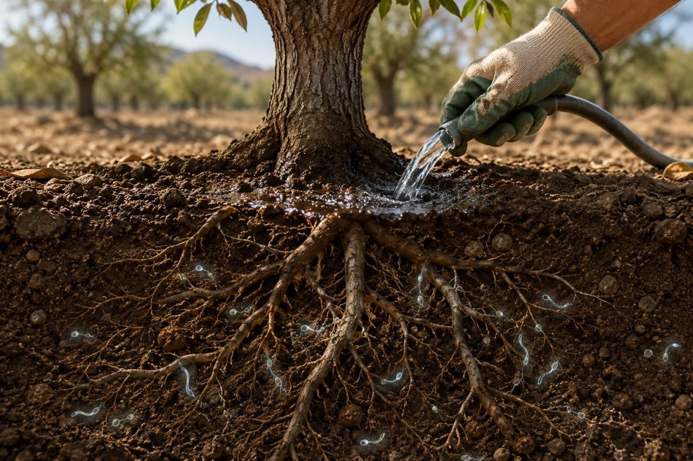
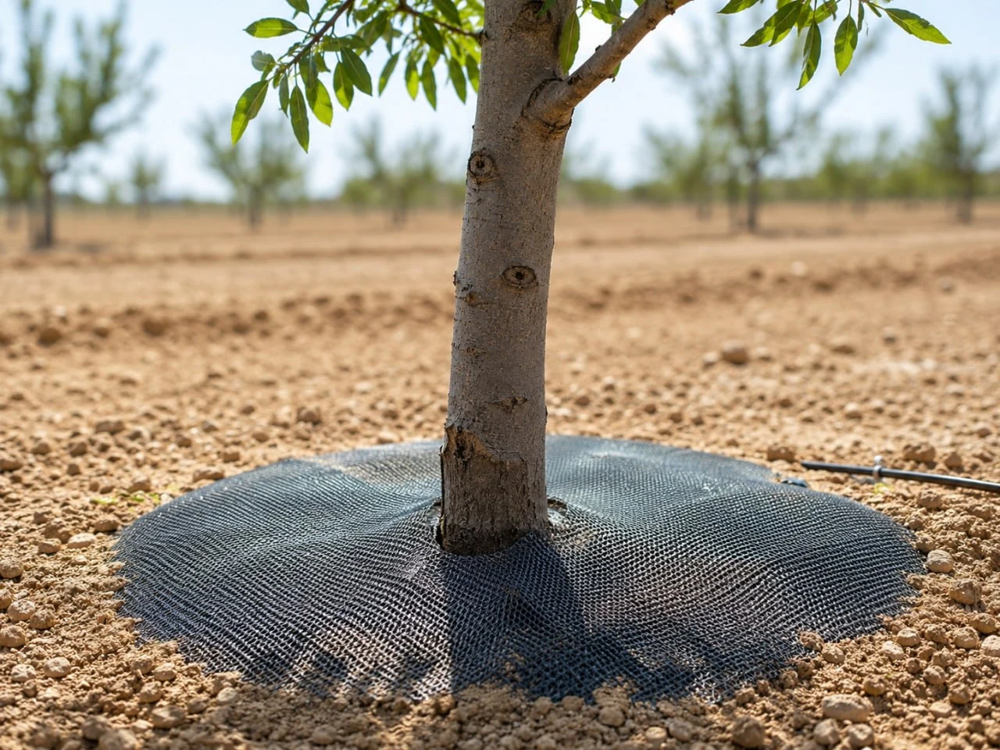
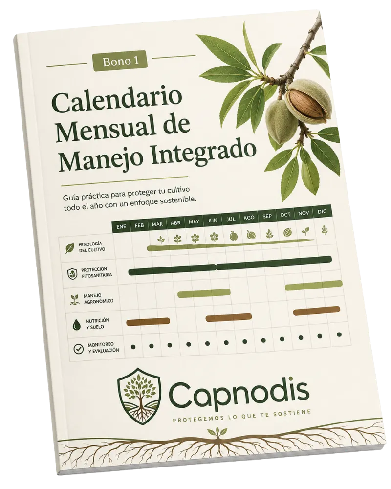
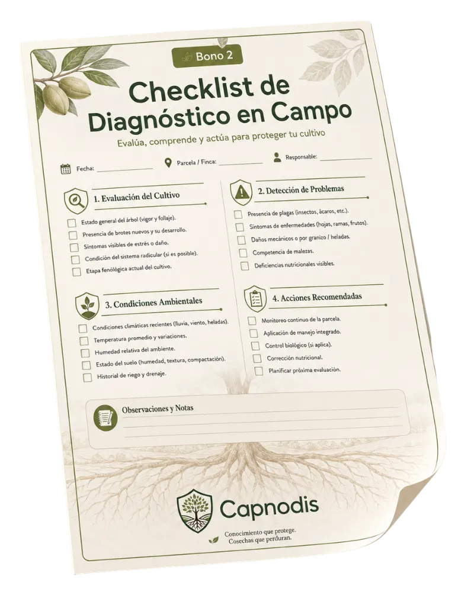
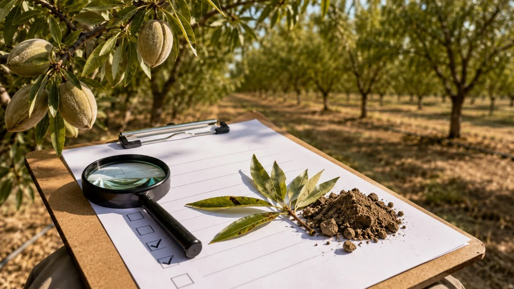

Guía digital en PDF para productores de almendro
¿Tus almendros se secaron "sin motivo" el verano pasado?
El gusano cabezudo puede dañar raíces y cuello del árbol durante meses antes de que veas el problema. Esta guía te ayuda a reconocer las señales y organizar un plan de manejo integrado para actuar a tiempo.
Guía digital en PDF
Acceso anticipado: 19,90 €
+ 3 recursos imprimibles
Basada en fuentes técnicas españolas

Primero parece sequía
Pero el daño real puede estar bajo tierra.
Plan claro
Calendario + checklist + árbol de decisión.
Primero parece sequía. Después ya es tarde.
Has cuidado el árbol, pero aun así empieza a secarse.
Revisas el riego. Piensas que puede ser falta de nutrición. Vuelves a tratar "por si acaso". Pero si el problema es gusano cabezudo, el daño más peligroso puede llevar meses avanzando bajo tierra.
Por eso esta guía no empieza por productos sueltos. Empieza por ayudarte a entender qué está pasando y qué decisiones tomar según el nivel de daño.
Ver la ofertaEl patrón que muchos productores reconocen
- El árbol amarillea o se debilita en verano.
- Parece estrés hídrico, calor o un problema de suelo.
- El daño en raíces y cuello no se ve a simple vista.
- Cuando el árbol se seca, puede ser demasiado tarde.

Cómo actúa el gusano cabezudo
El daño empieza donde menos se ve: raíces y cuello del árbol.
La clave no es reaccionar tarde, sino entender el ciclo y actuar con un plan. Este es el flujo que la guía te ayuda a ordenar:
Dentro de la guía principal
Un sistema práctico para entender, decidir y actuar.
No es otro artículo suelto. Es una guía organizada para consultar desde el móvil, ordenador o imprimir si lo necesitas.
Diagnóstico
Señales visibles y daño oculto en raíces y cuello del árbol.
Ciclo de vida
Cuándo aparecen adultos, puesta y por qué el momento importa.
Calendario
Qué observar y qué medidas valorar por temporada.
Humedad y riego
Cómo pensar la humedad del suelo sin recetas peligrosas.
Barreras físicas
Cuándo pueden ayudar y qué limitaciones tienen.
Nematodos
Cuándo sí, cuándo no y por qué pueden fallar.
Control biológico
Hongos entomopatógenos y precauciones dentro del IPM.
Saneamiento
Qué hacer con árboles muy afectados y focos de plaga.
Nuevas plantaciones
Patrones, suelo, riego y prevención antes del problema.
Plan de 12 meses
Resumen de seguimiento y acciones durante el año.
Recursos incluidos
3 materiales imprimibles para usar en el campo.

Bono 1: Calendario mensual
Qué observar y qué decisiones revisar durante la temporada para no actuar tarde.

Bono 2: Checklist de diagnóstico
Una lista sencilla para revisar síntomas, señales alrededor del tronco y nivel de riesgo.

Bono 3: Árbol de decisión
Esquema práctico para saber si conviene observar, actuar o retirar un árbol muy afectado.
+ 3 bonus prácticos de regalo
Recursos imprimibles para llevar el plan al campo.
Además de la guía principal, recibirás tres materiales pensados para imprimir, llevar a la parcela o consultar desde el móvil.

Calendario mensual de manejo integrado
Qué observar y qué decisiones revisar durante la temporada para no actuar tarde.

Checklist de diagnóstico en campo
Una lista sencilla para revisar síntomas, señales alrededor del tronco y nivel de riesgo.

Árbol de decisión según el nivel de daño
Un esquema práctico para saber si conviene observar, actuar, reforzar prevención o retirar un árbol muy afectado.
Guía digital en PDF + 3 recursos imprimibles
Comprar por 19,90 €
Para quién es
Diseñada para agricultores que necesitan actuar con criterio.
Esta guía puede ayudarte si tienes síntomas, sospechas o quieres prevenir daños en una plantación de almendro o frutales de hueso.
- Tienes almendros debilitados, amarillentos o secos en verano.
- Sospechas presencia de gusano cabezudo en tu parcela.
- Has visto adultos en brotes o ramas soleadas.
- Estás valorando nematodos, barreras o medidas preventivas.
- Quieres un plan claro antes de gastar dinero en soluciones sueltas.

Sin promesas falsas
No es una solución milagrosa. Es un plan de manejo integrado.
Esta guía no promete eliminar el 100% de la plaga ni garantiza salvar árboles que ya están muy afectados.
El objetivo es ayudarte a entender el ciclo, detectar señales, ordenar medidas y evitar decisiones improvisadas.
Antes de aplicar cualquier producto fitosanitario o biológico, revisa siempre la normativa vigente, la etiqueta del producto y consulta con un técnico cualificado si tienes dudas.
Acceso anticipado
Guía Práctica contra el Gusano Cabezudo en Almendro
Recibirás una guía digital en PDF, pensada para consultar desde el móvil, ordenador o imprimir si lo necesitas.
- Guía principal en PDF sobre diagnóstico, ciclo y manejo integrado.
- Bono 1: calendario mensual de manejo integrado.
- Bono 2: checklist de diagnóstico en campo.
- Bono 3: árbol de decisión según el nivel de daño.
- Bibliografía técnica validada con fuentes científicas españolas.
Preguntas frecuentes
Antes de comprar
¿Es una guía digital o un libro físico?
Es una guía digital en PDF. Podrás leerla desde el móvil, ordenador o imprimir las partes que necesites.
¿Qué incluyen los bonus?
Incluye un calendario mensual de manejo integrado, un checklist de diagnóstico en campo y un árbol de decisión según el nivel de daño.
¿Sirve para parcelas de secano?
Sí, pero con limitaciones importantes. Algunas medidas, como el manejo de humedad o los nematodos, son más difíciles en secano. La guía explica cuándo tienen sentido y cuándo pueden no ser viables.
¿La guía explica nematodos?
Sí. Incluye una sección específica sobre nematodos entomopatógenos, sus condiciones de aplicación, limitaciones y errores comunes.
¿Me dirá qué producto comprar?
No es una lista comercial de productos. La guía explica criterios para tomar decisiones y qué preguntas hacer antes de comprar o aplicar una solución.
¿Puede salvar árboles ya secos?
No podemos prometer eso. Si el daño interno es avanzado, puede que el árbol no sea recuperable. La guía incluye criterios para valorar cuándo intentar actuar y cuándo puede ser mejor eliminar el árbol para reducir el ciclo de la plaga.
¿Está basada en fuentes españolas?
Sí. La guía utiliza fuentes técnicas españolas como IFAPA/RAIF, además de estudios científicos sobre manejo integrado, nematodos y hongos entomopatógenos.
¿Sustituye a un técnico agrícola?
No. Es una guía informativa y práctica. Para decisiones fitosanitarias concretas, tratamientos y normativa vigente, consulta siempre con un técnico cualificado.
¿Cuándo recibiré la guía?
En la versión de preventa/acceso anticipado, la fecha exacta de entrega debe aparecer antes de pagar. Si no se entrega en esa fecha, podrás solicitar reembolso.
Actúa antes de perder más árboles
Si parece sequía, pero el problema está bajo tierra, necesitas un plan antes de improvisar.
Guía digital en PDF + calendario mensual + checklist de diagnóstico + árbol de decisión.
Comprar por 19,90 €